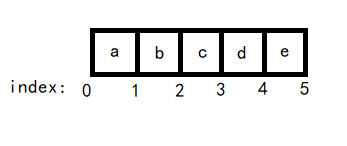

前言
第4-6天的课程：基本的Python基础, 不做详细罗列，这里只记录
知识体系和重难点。由于这块涉及到数据结构，会较为详细~
星星
- 困难度 ==> ★☆☆☆☆☆
- 知识量 ==> ★★★★★★
- 掌握度 ==> ★★★★★☆
知识体系
- 列表
- 列表的定义
- 列表的创建
- 向列表中添加元素
- 删除列表中的元素
- 获取列表中的元素
- 列表的常用操作符
- 列表的其他方法
- 元组
- 创建和访问一个元组
- 更新和删除一个元组
- 元组相关的操作符
- 内置方法
- 解压元组
- 字符串
- 字符串的定义
- 字符串的切片与拼接
- 字符串的常用内置方法
- 字符串格式化
- 字典
- 可变类型与不可变类型
- 字典的定义
- 创建和访问字典
- 字典的内置方法
- 集合
- 集合的创建
- 访问集合中的值
- 集合的内置方法
- 集合的转换
- 不可变集合
- 序列
- 针对序列的内置函数
重难点
列表
-
类型：list
-
特点：有序集合，元素可为不同类型，没有固定大小
-
表示：
[,,,] -
列表存放的是指向元素的指针
-
推导式创建列表
1
2
3
4
5
6
7
8
9
10
11x = [0] * 5
# [0, 0, 0, 0, 0]
x = [i for i in range(100) if (i % 2) != 0 and (i % 3) == 0]
# [3, 9, 15, 21, 27, 33, 39, 45, 51, 57, 63, 69, 75, 81, 87, 93, 99]
x = [[0] * 3] * 4
# [[0, 0, 0], [0, 0, 0], [0, 0, 0], [0, 0, 0]]
# ---
a = [0] * 3
y = [a] * 4
y[0][0] = 1
# [[1, 0, 0], [1, 0, 0], [1, 0, 0], [1, 0, 0]] -
函数
插入删除涉及到位置index, 具体为下图：
1
2
3
4
5
6
7
8
9
10
11
12
13
14
15
16
17
18
19
20
21
22
23
24
25
26
27
28
29
30
31
32
33
34
35
36
37
38
39
40
41
42
43
44
45
46
47
48
49
50
51
52
53
54
55
56
57
58
59len(list) # 求元素个数
# 添加元素 (如果 seq 为 list, 则 [a, b, c, [seq1, seq2, ...]])
list.append(obj)
# 扩展元素 (如果 seq 为 list, 则 [a, b, c, seq1, seq2, ...])
list.extend(seq)
list.insert(index, obj) # 插入元素
list.remove(obj) # 删除元素
list.pop([index=-1]) # 弹出元素
del [start index : end index] # 删除指定范围元素
list.count(obj) # 计算元素出现次数
list.index(x[, start[, end]]) # 从指定的 start 到 end 中找到某元素返回索引值
list.reverse() # 反转列表 list[::-1]
# 排序
# 1. key 用于排序的 index
# 2. reverse = True 降序， reverse = False 升序（默认）。
list.sort(key=None, reverse=False)
# pop example
x = ['Monday', 'Tuesday', 'Wednesday', 'Thursday', 'Friday']
# index: 0(-5) 1(-4) 2(-3) 3(-2) 4(-1)
y = x.pop()
print(y) # Friday
y = x.pop(0)
print(y) # Monday
y = x.pop(-2)
print(y) # Wednesday
print(x) # ['Tuesday', 'Thursday']
# sort example 1
def takeSecond(elem):
return elem[1]
x = [(2, 2), (3, 4), (4, 1), (1, 3)]
x.sort(key=takeSecond)
print(x)
# [(4, 1), (2, 2), (1, 3), (3, 4)]
# sort example 2 lambda 表达式
x.sort(key=lambda a: a[0])
print(x)
# [(1, 3), (2, 2), (3, 4), (4, 1)]
# 浅拷贝与深拷贝
list1 = [123, 456, 789, 213]
list2 = list1
list3 = list1[:]
print(list2) # [123, 456, 789, 213]
print(list3) # [123, 456, 789, 213]
list1.sort()
print(list2) # [123, 213, 456, 789]
print(list3) # [123, 456, 789, 213]
list1 = [[123, 456], [789, 213]]
list2 = list1
list3 = list1[:]
print(list2) # [[123, 456], [789, 213]]
print(list3) # [[123, 456], [789, 213]]
list1[0][0] = 111
print(list2) # [[111, 456], [789, 213]]
print(list3) # [[111, 456], [789, 213]] -
操作符
- 等号操作符
==(元素相同且位置相同) - 连接操作符
+( =extend()) - 重复操作符
*(只能*整数) - 成员关系操作符
in、not in
- 等号操作符
元组
- 类型：tuple
- 特点：有序集合，元素可为不同类型，固定大小，不可修改 (
immutable) - 表示：
(,,,) - 列表存放的是指向元素的指针
- 元组和列表都属于序列
- 列表属于可变序列，它的元素可以随时修改或者删除，而元组属于不可变序列，其中的元素是不能修改的，除非整体重新赋值。
- 列表可以使用多种方法实现添加和修改列表元素，而元组没有办法，因为不能想元组中添加或修改元素，同样也不能删除元素
- 列表可以使用切片方法访问和修改列表中的元素，元组也支持切片，但是它只支持通过切片访问元组中的元素，不支持修改
- 元组比列表中的访问和处理速度更快，所以如果只需要对其中的元素进行访问，而不进行任何修改，建议使用元组。
- 列表不能作为字典类型中的键，而元组是可以的。
- 元组中只包含一个元素时，需要在元素后面添加逗号，否则括号会被当作运算符使用。
1 | x = (1) # <class 'int'> |
- 解压元组
解压元组挺有趣的，第一次听说和使用的是隔壁 JS 的 ES6 的语法 ~
（ES6 - 解构赋值）
1 | t = (1, 10.31, ('OK', 'python')) |
字符串
- 可以用单引号也可以双引号， 类型
str - 转义
转义字符 描述 \\反斜杠符号 \'单引号 \"双引号 \n换行 \t横向制表符(TAB) \r回车
1 | # 前面加小 r 不转义 |
- 字符串跟元组一样不可修改性，可理解为 C 的
char[], - 内置方法：
1 | str = 'xiaoxie' |
-
格式化
printf换汤不换药，不多介绍。符号 描述 %c 格式化字符及其ASCII码 %s 格式化字符串，用str()方法处理对象 %r 格式化字符串，用rper()方法处理对象 %d 格式化整数 %o 格式化无符号八进制数 %x 格式化无符号十六进制数 %X 格式化无符号十六进制数（大写） %f 格式化浮点数字，可指定小数点后的精度 %e 用科学计数法格式化浮点数 %E 作用同%e，用科学计数法格式化浮点数 %g 根据值的大小决定使用%f或%e %G 作用同%g，根据值的大小决定使用%f或%E
符号 功能 m.nm 是显示的最小总宽度,n 是小数点后的位数（如果可用的话） -用作左对齐 +在正数前面显示加号( + ) #在八进制数前面显示零(‘0’)，在十六进制前面显示’0x’或者’0X’(取决于用的是’x’还是’X’) 0显示的数字前面填充’0’而不是默认的空格
1 | str8 = '{0:.2f}{1}'.format(27.658, 'GB') # 保留小数点后两位 |
字典
- 类型:
dict - 无序，Key唯一且不可变
- 能hash() ==> 不可变 ==> 数值字符元组 ==> 修改后 id() 变化
- 不能hash() ==> 可变 ==> 列表集合字典 ==> 修改后 id() 不变
- 字典是 Python 唯一的一个 映射类型，字符串、元组、列表属于序列类型。
- 表示：
{k:v, k1:v1, k2:v2, k3:v3, ...} - Key唯一，如果多次赋值，后面会覆盖前面的值
- 创建字典
1 | dic1 = dict([('apple', 4139), ('peach', 4127), ('cherry', 4098)]) |
- 内置方法：
1 | dict.fromkeys(seq) # 用一个序列作为 key 创建字典 |
集合
- 类型：
set - 无序, Key唯一且不可变, 无索引, 不可切片
- 表示：
{,,,,} - 内置函数：
1 | set.add(elmnt) # 添加元素 elmnt 可为 字符串，元组，数组，可用来去除重复元素 |
冻结集合(不可变集合)
- 类型：
frozenset([iterable]) - Python 提供了不能改变元素的集合的实现版本，即不能增加或删除元素，类型名叫
frozenset。需要注意的是frozenset仍然可以进行集合操作，只是不能用带有update的方法。
序列
- 只是一个抽象概念？？？或者是一个通用的接口，用于实现？？？
- 序列包括（字符串、列表、元组、集合和字典），其中集合和字典不支持索引、切片、相加和相乘操作。
- 内置函数：
1 | # 不解释 |
完结撒花
坚持不容易, 巨长的内容和超多的知识量(虽然不怎么难), 对新手不容易坚持，就算是有点基础的能坚持不跳过也不容易…
总结一波
- 基本一个套路（类型，特点，表示方法，增删改查(切片)方法，内置函数）
- 还行的知识点（深拷贝浅拷贝引用，推导式，解压元组，集合的运算，lambda表达式，压缩函数，
maketrans和translate） - 奇怪的函数（可能为了某种）不知名的用途设计的吧…
dict.popitem()，set.pop()为啥要随机弹出sum(iterable[, start=0])求和就求和，为啥要加上后面的参数，名字还是start- 序列是 python 实现的一个数据结构还是为了教学而抽象出来的一个概念，或者是 python 抽象的一个接口，其他数据结构来实现它的函数
- 还有一节就可以开始机器学习啦 ~